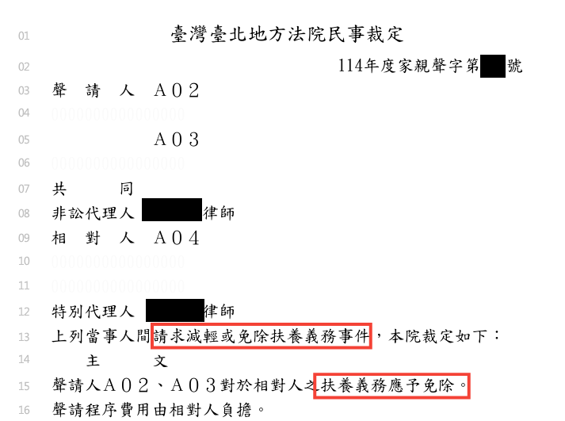
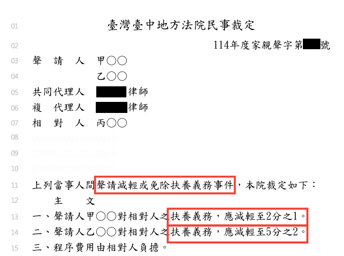
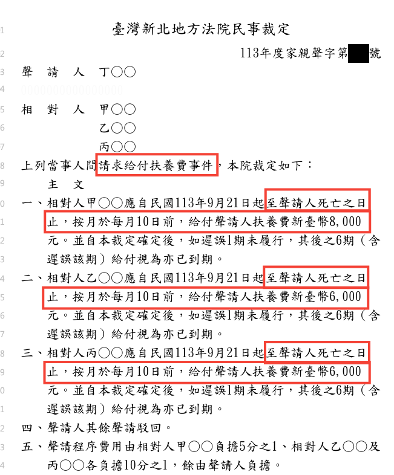

父母目前是否不能維持生活
收入、退休金、保險給付、存款、不動產與其他可用資源，都可能影響扶養義務是否可能發生。
父母扶養義務
先看三份人工去識別化的裁定主文。父母扶養義務案件，結果可能是完全免除、比例減輕，或命多名子女按月給付扶養費。主文不是勝率保證；真正重要的是，法院如何依事實、證據與程序作出結論。
開始父母扶養義務免費自評為保護當事人隱私，以下裁定內容已人工去識別化。

這件案件的案由是子女主動向法院聲請減輕或免除對父母的扶養義務。最後，法院裁定子女對父母的扶養義務應予免除，達成完全免除扶養義務的結果。
這類程序不是只能等父母來請求扶養費後才能處理；在符合法律要件時，子女也可以主動向法院聲請減輕或免除扶養義務。

這件案件同樣是子女主動向法院聲請減輕或免除對父母的扶養義務。最後，法院沒有完全免除，但分別減輕兩名子女應負擔的扶養義務。
這表示扶養義務仍然存在，只是法院依個別情況調整負擔程度。

這件案件則是反過來由父母向三名子女請求給付扶養費。最後，法院命三名子女自指定日期起至聲請人，也就是父母死亡之日止，分別按月給付 8,000 元、6,000 元與 6,000 元扶養費，合計每月 20,000 元。
先透過簡單自評了解現況，才知道下一步該怎麼準備。
成年子女與父母屬於直系血親，依法互負扶養義務。若有多名同一親等的子女，原則上應依各自經濟能力分擔，不是當然平均分配。
父母可以受扶養，仍以不能維持生活為前提。父母雖不必再證明自己沒有謀生能力，是否確實需要由子女扶養，仍是案件的第一個問題。
法律也保留減輕或免除的可能。負扶養義務的子女若因扶養而不能維持自己生活，對父母的扶養義務可能減輕；父母曾無正當理由未盡扶養義務，或有虐待、重大侮辱、其他身心不法侵害時，也可能請求減輕，情節重大時得請求免除。
收入、退休金、保險給付、存款、不動產與其他可用資源，都可能影響扶養義務是否可能發生。
文件類型與目前程序不同，代表需要注意的期限、回覆與準備方向也可能不同。
扶養父母後，若子女自己連基本生活都難以維持，可能影響扶養義務的程度。
過去長期未扶養，可能是減輕或免除的重要變量；仍須看具體經過與整體情節。
侵害程度與證據，可能影響法院是否認為應減輕或免除扶養義務。
不一定。本文展示的裁定主文包含完全免除、比例減輕與命按月給付等部分可能結果。實際結果仍須依完整事實、證據與程序判斷。
不一定。父母是否能以收入、退休金、保險給付、其他子女分擔或財產維持生活，是扶養義務是否可能發生的重要前提。
扶養父母後若子女自己連基本生活都難以維持，可能影響扶養義務的程度；實際法律效果仍應依完整事實與程序判斷。
不一定。必須同時閱讀主文與理由，確認法院是認定扶養義務仍存在，還是認定扶養義務尚未發生。
面對扶養費問題，先了解自己的法律位置、整理家庭經過與現有資料，並非逃避責任；而是避免在資訊不足、時間壓力或情緒衝突下，作出難以回頭的決定。
律師可以協助您辨識目前的程序、整理與扶養義務有關的重要資料，並將家庭經過與經濟狀況轉化為具體陳述。無論是希望確認是否需要負擔、評估減輕或免除的可能，或已收到文件需要處理，都可以先透過免費初評進行確認。
本文及線上工具僅提供一般法律資訊與初步分流，不代表個案法律意見；實際結果仍應依完整事實、證據、對方請求內容及目前程序判斷。